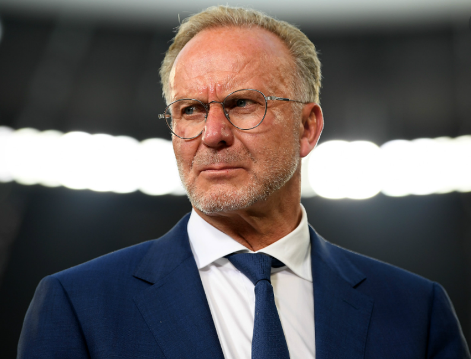

Bundesliga
Latest News
·Rummenigge leaves Bayern

Karl-Heinz-Rummenigge will step down as CEO of Bayern at the end of June. The club announced it a few minutes ago on his website. Another legend like Oliver Kahn will succeed him in office. "This is the most strategically sensible and logical moment," says Karl-Heinz Rummenigge. “It is the end of the financial year and a new section begins with a new team of coaches. Oliver Kahn, as the new CEO, should be responsible for the new season from the beginning, also in the interest of the people involved and therefore in the interest of the future of FC Bayern. Two years ago I said that we were planning a prudent transition, and now it is finally being done. This is how it should be, ”the statement said.